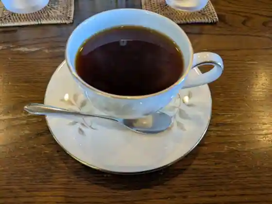
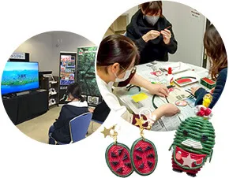

Japan / Toyama / Nyuzen
Nyuzen · Toyama
Nyuzen
Highlighted on the Toyama map.
Nyuzen Town Hall


Sights · Things to do · Places to eat · Places to stay · Day-to-day services
Nearby in Toyama: ← Nanto · Oyabe →
Other towns: Asahimachi · Funahashi · Himi · Imizu · Kamiichi · Kurobe · Namerikawa · Nanto · Oyabe · Takaoka · Tateyama · Tonami · Toyama · Uozu
All towns in Toyama · Back to all prefectures